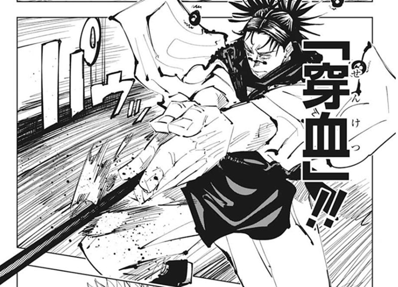
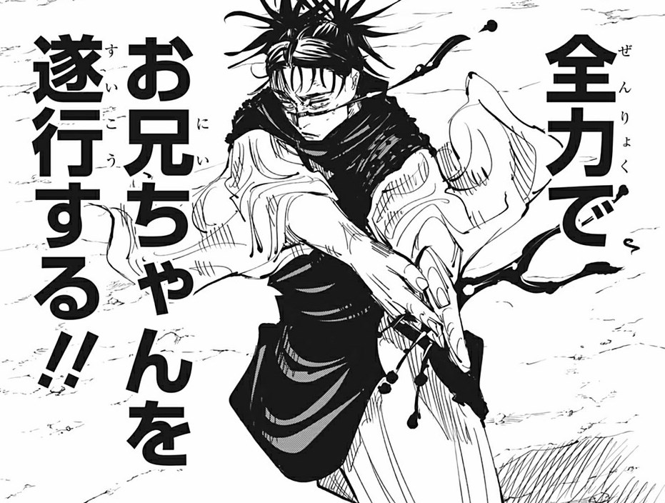

こんにちは、ザクザク食感です。
桜の花が散り葉桜の時期となりましたが、いかがお過ごしでしょうか。
やっと春らしい気候になったな～と思ったら最近急に寒くないですか？
そんなに丈夫な体を持っていないので、普通に体調を崩しかけてて困ります。
これは風邪あるあるなのですが、まず鼻がむずむずし始めて、そこから喉に来て、悪化すると熱が出て体もだるくなる みたいな流れで体調を崩すことが多いです。
ベンザブロックなら黄色を飲むタイプの風邪ですね。
今回は違和感を感じた時点でこれはやばい！と思って覚悟していたので（これといった対処はしていない）、喉も調子悪いかな～ぐらいのところで収まってくれました。
それは良かったのですが、今度は鼻血がよく出るようになりました。
鼻がむずむずし始めると鼻をよくかむようになるので、鼻腔が乾燥しやすくなり、鼻血がよく出るようになります。
僕はひどい鼻炎持ちだったのでこの一連の流れには慣れていますが、鼻炎を治療してからは鼻血が出ることも少なくなったので、懐かしいな～という気持ちになりました。
まぁだるいことに変わりはないけど
鼻血が止まったと思ったら、今度はお腹が痛いです。
なんで……？わりと調子よかったのにな……
あれ……？
これは……！まずいッ！！！

穿 血
便器が赤くなっていました。
うわ痔か……？
おそるおそるお尻を拭きます。
トイレットペーパーは真っ赤ですが、肛門は痛くありません。
これは……！まさか……ッ！！！！！
壊相！！血塗！！見ていろ！！！

超 新 星
血便でした；；
なんで？？？？？マジで心当たりがありません。
早く治りますように。あと脹相ほんとうにごめん 羂索戦めっちゃお兄ちゃんしててかっこよかったです。
皆様のご健康とご多幸を心よりお祈り申し上げます。
それでは、さようなら。